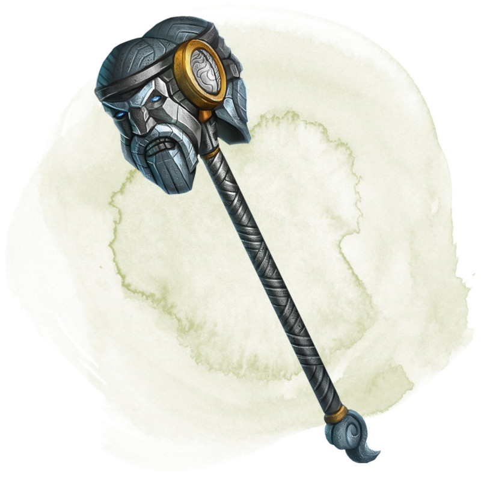

Marteau de tonnerre
Arme (maillet), légendaire
Vous obtenez un bonus de +1 à l'attaque et aux dégâts réalisés avec cette arme magique.
Fléau des géants (nécessite un lien). Vous devez porter un ceinturon de force de géant (n'importe laquelle) et des gantelets de puissance d'ogre pour vous lier avec cette arme. Le lien se termine si vous enlevez l'un ou l'autre de ces objets. Tant que vous êtes lié avec cette arme et que vous la portez, votre Force augmente de 4 et peut dépasser 20, mais pas 30. Lorsque vous faites un 20 naturel sur un jet d'attaque réalisée avec cette arme contre un géant, le géant doit réussir un jet de sauvegarde de Constitution DD 17 ou mourir.
Le marteau possède également 5 charges. Tant que vous êtes lié avec lui, vous pouvez dépenser une charge et réaliser une attaque à distance avec le marteau, en le lançant comme s'il avait la propriété Lancer avec une portée nominale de 6 mètres et une portée maximale de 18 mètres. Si l'attaque réussit, le marteau déclenche un coup de tonnerre audible à 90 mètres. La cible et toute autre créature dans un rayon de 9 mètres autour doivent réussir un jet de sauvegarde de Constitution DD 17 ou être étourdis jusqu'à la fin de votre prochain tour. Le marteau récupère 1d4 + 1 charges dépensées chaque jour à l'aube.
Fléau des géants (nécessite un lien). Vous devez porter un ceinturon de force de géant (n'importe laquelle) et des gantelets de puissance d'ogre pour vous lier avec cette arme. Le lien se termine si vous enlevez l'un ou l'autre de ces objets. Tant que vous êtes lié avec cette arme et que vous la portez, votre Force augmente de 4 et peut dépasser 20, mais pas 30. Lorsque vous faites un 20 naturel sur un jet d'attaque réalisée avec cette arme contre un géant, le géant doit réussir un jet de sauvegarde de Constitution DD 17 ou mourir.
Le marteau possède également 5 charges. Tant que vous êtes lié avec lui, vous pouvez dépenser une charge et réaliser une attaque à distance avec le marteau, en le lançant comme s'il avait la propriété Lancer avec une portée nominale de 6 mètres et une portée maximale de 18 mètres. Si l'attaque réussit, le marteau déclenche un coup de tonnerre audible à 90 mètres. La cible et toute autre créature dans un rayon de 9 mètres autour doivent réussir un jet de sauvegarde de Constitution DD 17 ou être étourdis jusqu'à la fin de votre prochain tour. Le marteau récupère 1d4 + 1 charges dépensées chaque jour à l'aube.
Dungeon Master´s Guide (SRD)
